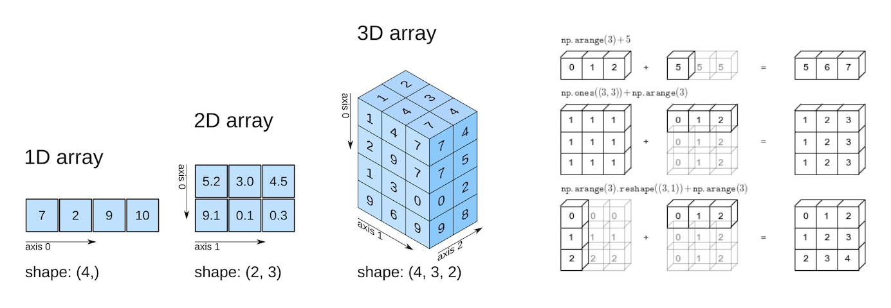

4 NumPy
NumPy, short for Numerical Python is used to analyze numeric data with Python. NumPy arrays are primarily used to create homogeneous \(n\)-dimensional arrays (\(n = 1,...,n\)). Let us import the NumPy library to use its methods and functions, and the NumPy function array() to define a NumPy array.
import numpy as np#Using the NumPy function array() to define a NumPy array
numpy_array = np.array([[1,2],[3,4]])
numpy_arrayarray([[1, 2],
[3, 4]])type(numpy_array)numpy.ndarrayThe NumPy function array() creates an object of type numpy.ndarray.
4.1 Why do we need NumPy arrays?
NumPy arrays can store data just like other data stuctures such as such as lists, tuples, and Pandas DataFrame. Computations performed using NumPy arrays can also be performed with data stored in the other data structures. However, NumPy is preferred for its efficiency, especially when working with large arrays of data.
4.1.1 Numpy arrays are memory efficient
A NumPy array is a collection of homogeneous data-types that are stored in contiguous memory locations. On the other hand, data structures such as lists are a collection of heterogeneous data types stored in non-contiguous memory locations. Homogenous data elements let the NumPy array be densely packed resulting in lesser memory consumption. The following example illustrates the smaller size of NumPy arrays as compared to other data structures.
#Example showing NumPy arrays take less storage space than lists, tuples and Pandas DataFrame for the same elements
tuple_ex = tuple(range(1000))
list_ex = list(range(1000))
numpy_ex = np.array([range(1000)])
pandas_df = pd.DataFrame(range(1000))
print("Space taken by tuple =",tuple_ex.__sizeof__()," bytes")
print("Space taken by list =",list_ex.__sizeof__()," bytes")
print("Space taken by Pandas DataFrame =",pandas_df.__sizeof__()," bytes")
print("Space taken by NumPy array =",numpy_ex.__sizeof__()," bytes")Space taken by tuple = 8024 bytes
Space taken by list = 8040 bytes
Space taken by Pandas DataFrame = 8128 bytes
Space taken by NumPy array = 4120 bytesNote that NumPy arrays are memory efficient as long as they are homogenous. They will lose the memory efficiency if they are used to store elements of multiple data types.
The example below compares the size of a homogenous NumPy array to that of a similar heterogenous NumPy array to illustrate the point.
numpy_homogenous = np.array([[1,2],[3,3]])
print("Size of a homogenous numpy array = ",numpy_homogenous.__sizeof__(), "bytes")Size of homogenous numpy array = 136 bytesNow let us convert an element of the above array to a string, and check the size of the array.
numpy_homogenous = np.array([[1,'2'],[3,3]])
print("Size of a heterogenous numpy array = ",numpy_homogenous.__sizeof__(), "bytes")Size of a heterogenous numpy array = 296 bytesThe size of the homogenous NumPy array is much lesser than that of the one with heterogenous data. Thus, NumPy arrays are primarily used for storing homogenous data.
On the other hand, the size of other data structures, such as a list, does not depend on whether the elements in them are homogenous or heterogenous, as shown by the example below.
list_homogenous = list([1,2,3,4])
print("Size of a homogenous list = ",list_homogenous.__sizeof__(), "bytes")
list_heterogenous = list([1,'2',3,4])
print("Size of a heterogenous list = ",list_heterogenous.__sizeof__(), "bytes")Size of a homogenous list = 72 bytes
Size of a heterogenous list = 72 bytesNote that the memory efficiency of NumPy arrays does not come into play with a very small amount of data. Thus, a list with four elements - 1,2,3 and 4, has a lesser size than a NumPy array with the same elements. However, with larger datasets, such as the one shown earlier (sequence of integers from 0 to 999), the memory efficiency of NumPy arrays can be seen.
Unlike data structures such as lists, tuples, and dictionary, all elements of a NumPy array should be of same type to leverage the memory efficiency of NumPy arrays.
4.1.2 NumPy arrays are fast
With NumPy arrays, mathematical computations can be performed faster, as compared to other data structures, due to the following reasons:
As the NumPy array is densely packed with homogenous data, it helps retrieve the data faster as well, thereby making computations faster.
With NumPy, vectorized computations can replace the relatively more expensive python
forloops. The NumPy package breaks down the vectorized computations into multiple fragments and then processes all the fragments parallelly. However, with aforloop, computations will be one at a time.The NumPy package integrates C, and C++ codes in Python. These programming languages have very little execution time as compared to Python.
We’ll see the faster speed on NumPy computations in the example below.
Example: This example shows that computations using NumPy arrays are typically much faster than computations with other data structures.
Q: Multiply whole numbers upto 1 million by an integer, say 2. Compare the time taken for the computation if the numbers are stored in a NumPy array vs a list.
Use the numpy function arange() to define a one-dimensional NumPy array.
#Examples showing NumPy arrays are more efficient for numerical computation
import time as tm
start_time = tm.time()
list_ex = list(range(1000000)) #List containinig whole numbers upto 1 million
a=(list_ex*2)
print("Time take to multiply numbers in a list = ", tm.time()-start_time)
start_time = tm.time()
tuple_ex = tuple(range(1000000)) #List containinig whole numbers upto 1 million
a=(tuple_ex*2)
print("Time take to multiply numbers in a tuple = ", tm.time()-start_time)
start_time = tm.time()
df_ex = pd.DataFrame(range(1000000)) #Pandas DataFrame containinig whole numbers upto 1 million
a=(df_ex*2)
print("Time take to multiply numbers in a Pandas DataFrame = ", tm.time()-start_time)
start_time = tm.time()
numpy_ex = np.arange(1000000) #tuple containinig whole numbers upto 1 million
a=(numpy_ex*2)
print("Time take to multiply numbers in a NumPy array = ", tm.time()-start_time)Time take to multiply numbers in a list = 0.023949384689331055
Time take to multiply numbers in a tuple = 0.03192734718322754
Time take to multiply numbers in a Pandas DataFrame = 0.047330617904663086
Time take to multiply numbers in a NumPy array = 0.04.2 NumPy array: Basic attributes
Let us define a NumPy array:
numpy_ex = np.array([[1,2,3],[4,5,6]])
numpy_exarray([[1, 2, 3],
[4, 5, 6]])The attributes of numpy_ex can be seen by typing numpy_ex followed by a ., and then pressing the tab key.
Some of the basic attributes of a NumPy array are the following:
ndim: Shows the number of dimensions (or axes) of the array.
numpy_ex.ndim2shape: This is a tuple of integers indicating the size of the array in each dimension. For a matrix with n rows and m columns, the shape will be (n,m). The length of the shape tuple is therefore the rank, or the number of dimensions,ndim.
numpy_ex.shape(2, 3)size: This is the total number of elements of the array, which is the product of the elements of shape.
numpy_ex.size6dtype: This is an object describing the type of the elements in the array. One can create or specify dtype’s using standard Python types. NumPy provides many, for example bool_, character, int_, int8, int16, int32, int64, float_, float8, float16, float32, float64, complex_, complex64, object_.
numpy_ex.dtypedtype('int32')4.3 Arithematic operations
Numpy arrays support arithmetic operators like +, -, *, etc. We can perform an arithmetic operation on an array either with a single number (also called scalar) or with another array of the same shape. However, we cannot perform an arithematic operation on an array with an array of a different shape.
Below are some examples of arithematic operations on arrays.
#Defining two arrays of the same shape
arr1 = np.array([[1, 2, 3, 4],
[5, 6, 7, 8],
[9, 1, 2, 3]])
arr2 = np.array([[11, 12, 13, 14],
[15, 16, 17, 18],
[19, 11, 12, 13]])#Element-wise summation of arrays
arr1 + arr2array([[12, 14, 16, 18],
[20, 22, 24, 26],
[28, 12, 14, 16]])# Element-wise subtraction
arr2 - arr1array([[10, 10, 10, 10],
[10, 10, 10, 10],
[10, 10, 10, 10]])# Adding a scalar to an array adds the scalar to each element of the array
arr1 + 3array([[ 4, 5, 6, 7],
[ 8, 9, 10, 11],
[12, 4, 5, 6]])# Dividing an array by a scalar divides all elements of the array by the scalar
arr1 / 2array([[0.5, 1. , 1.5, 2. ],
[2.5, 3. , 3.5, 4. ],
[4.5, 0.5, 1. , 1.5]])# Element-wise multiplication
arr1 * arr2array([[ 11, 24, 39, 56],
[ 75, 96, 119, 144],
[171, 11, 24, 39]])# Modulus operator with scalar
arr1 % 4array([[1, 2, 3, 0],
[1, 2, 3, 0],
[1, 1, 2, 3]], dtype=int32)4.4 Broadcasting
Broadcasting allows arithmetic operations between two arrays with different numbers of dimensions but compatible shapes.
The Broadcasting documentation succinctly explains it as the following:
“The term broadcasting describes how NumPy treats arrays with different shapes during arithmetic operations. Subject to certain constraints, the smaller array is broadcast across the larger array so that they have compatible shapes. Broadcasting provides a means of vectorizing array operations so that looping occurs in C instead of Python. It does this without making needless copies of data and usually leads to efficient algorithm implementations.”
The example below shows the broadcasting of two arrays.
arr1 = np.array([[1, 2, 3, 4],
[5, 6, 7, 8],
[9, 1, 2, 3]])
arr2 = np.array([4, 5, 6, 7])arr1 + arr2array([[ 5, 7, 9, 11],
[ 9, 11, 13, 15],
[13, 6, 8, 10]])When the expression arr1 + arr2 is evaluated, arr2 (which has the shape (4,)) is replicated three times to match the shape (3, 4) of arr1. Numpy performs the replication without actually creating three copies of the smaller dimension array, thus improving performance and using lower memory.
In the above addition of arrays, arr2 was stretched or broadcast to the shape of arr1. However, this broadcasting was possible only because the right dimension of both the arrays is 4, and the left dimension of one of the arrays is 1.
See the broadcasting documentation to understand the rules for broadcasting:
“When operating on two arrays, NumPy compares their shapes element-wise. It starts with the trailing (i.e. rightmost) dimensions and works its way left. Two dimensions are compatible when:
- they are equal, or
- one of them is 1”
If the rightmost dimension of arr2 is 3, broadcasting will not occur, as it is not equal to the rightmost dimension of arr1:
#Defining arr2 as an array of shape (3,)
arr2 = np.array([4, 5, 6])#Broadcasting cannot happed when the broadcasting rules are violated
arr1 + arr2ValueError: operands could not be broadcast together with shapes (3,4) (3,) 4.5 Comparison
Numpy arrays support comparison operations like ==, !=, > etc. The result is an array of booleans.
arr1 = np.array([[1, 2, 3], [3, 4, 5]])
arr2 = np.array([[2, 2, 3], [1, 2, 5]])arr1 == arr2array([[False, True, True],
[False, False, True]])arr1 != arr2array([[ True, False, False],
[ True, True, False]])arr1 >= arr2array([[False, True, True],
[ True, True, True]])arr1 < arr2array([[ True, False, False],
[False, False, False]])Array comparison is frequently used to count the number of equal elements in two arrays using the sum method. Remember that True evaluates to 1 and False evaluates to 0 when booleans are used in arithmetic operations.
(arr1 == arr2).sum()34.6 Concatenating arrays
Arrays can be concatenated along an axis with NumPy’s concatenate function. The axis argument specifies the dimension for concatenation. The arrays should have the same number of dimensions, and the same length along each axis except the axis used for concatenation.
The examples below show concatenation of arrays.
arr1 = np.array([[1, 2, 3], [3, 4, 5]])
arr2 = np.array([[2, 2, 3], [1, 2, 5]])
print("Array 1:\n",arr1)
print("Array 2:\n",arr2)Array 1:
[[1 2 3]
[3 4 5]]
Array 2:
[[2 2 3]
[1 2 5]]#Concatenating the arrays along the default axis: axis=0
np.concatenate((arr1,arr2))array([[1, 2, 3],
[3, 4, 5],
[2, 2, 3],
[1, 2, 5]])#Concatenating the arrays along axis = 1
np.concatenate((arr1,arr2),axis=1)array([[1, 2, 3, 2, 2, 3],
[3, 4, 5, 1, 2, 5]])Since the arrays need to have the same dimension only along the axis of concatenation, let us try concatenate the array below (arr3) with arr1, along axis = 0.
arr3 = np.array([2, 2, 3])np.concatenate((arr1,arr3),axis=0)ValueError: all the input arrays must have same number of dimensions, but the array at index 0 has 2 dimension(s) and the array at index 1 has 1 dimension(s)Note the above error, which indicates that arr3 has only one dimension. Let us check the shape of arr3.
arr3.shape(3,)We can reshape arr3 to a shape of (1,3) to make it compatible for concatenation with arr1 along axis = 0.
arr3_reshaped = arr3.reshape(1,3)
arr3_reshapedarray([[2, 2, 3]])Now we can concatenate the reshaped arr3 with arr1 along axis = 0.
np.concatenate((arr1,arr3_reshaped),axis=0)array([[1, 2, 3],
[3, 4, 5],
[2, 2, 3]])4.6.1 Practice exercise 1
4.6.1.1
Read the coordinates of the capital cities of the world from http://techslides.com/list-of-countries-and-capitals . Use NumPy to print the name and coordinates of the capital city closest to the US capital - Washington DC.
Note that:
- The Country Name for US is given as United States in the data.
- The ‘closeness’ of capital cities from the US capital is based on the Euclidean distance of their coordinates to those of the US capital.
Hints:
- Use read_html() from the Pandas library to read the table.
- Use the to_numpy() function of the Pandas DataFrame class to convert a DataFrame to a Numpy array
- Use broadcasting to compute the euclidean distance of capital cities from Washington DC.
4.6.1.2
Use NumPy to: 1. Print the names of the countries of the top 10 capital cities closest to the US capital - Washington DC. 2. Create and print a NumPy array containing the coordinates of the top 10 cities.
Hint: Use the concatenate() function from the NumPy library to stack the coordinates of the top 10 cities.
4.7 Vectorized computation with NumPy
Several matrix algebra operations such as multiplications, decompositions, determinants, etc. can be performed conveniently with NumPy. However, we’ll focus on matrix multiplication as it is very commonly used to avoid python for loops and make computations faster. The dot function is used to multiply matrices:
#Defining a 2x3 matrix
a = np.array([[0,1],[3,4]])
aarray([[0, 1],
[3, 4]])#Defining a 3x2 matrix
b = np.array([[6,-1],[2,1]])
barray([[ 6, -1],
[ 2, 1]])#Multiplying matrices 'a' and 'b' using the dot function
a.dot(b)array([[ 2, 1],
[26, 1]])#Note that * results in element-wise multiplication
a*barray([[ 0, -1],
[ 6, 4]])Example 2: This example will show vectorized computations with NumPy. Vectorized computations help perform computations more efficiently, and also make the code concise.
Q: Read the (1) quantities of roll, bun, cake and bread required by 3 people - Ben, Barbara & Beth, from food_quantity.csv, (2) price of these food items in two shops - Target and Kroger, from price.csv. Find out which shop should each person go to minimize their expenses.
#Reading the datasets on food quantity and price
import pandas as pd
food_qty = pd.read_csv('./Datasets/food_quantity.csv')
price = pd.read_csv('./Datasets/price.csv')food_qty| Person | roll | bun | cake | bread | |
|---|---|---|---|---|---|
| 0 | Ben | 6 | 5 | 3 | 1 |
| 1 | Barbara | 3 | 6 | 2 | 2 |
| 2 | Beth | 3 | 4 | 3 | 1 |
price| Item | Target | Kroger | |
|---|---|---|---|
| 0 | roll | 1.5 | 1.0 |
| 1 | bun | 2.0 | 2.5 |
| 2 | cake | 5.0 | 4.5 |
| 3 | bread | 16.0 | 17.0 |
First, let’s start from a simple problem. We’ll compute the expenses of Ben if he prefers to buy all food items from Target
#Method 1: Using loop
bens_target_expense = 0 #Initializing Ben's expenses to 0
for k in range(4): #Iterating over all the four desired food items
bens_target_expense += food_qty.iloc[0,k+1]*price.iloc[k,1] #Total expenses on the kth item
bens_target_expense #Total expenses for Ben if he goes to Target50.0#Method 2: Using NumPy array
food_num = food_qty.iloc[0,1:].to_numpy() #Converting food quantity (for Ben) dataframe to NumPy array
price_num = price.iloc[:,1].to_numpy() #Converting price (for Target) dataframe to NumPy array
food_num.dot(price_num) #Matrix multiplication of the quantity vector with the price vector directly yields the result50.0Ben will spend $50 if he goes to Target
Now, let’s add another layer of complication. We’ll compute Ben’s expenses for both stores - Target and Kroger
#Method 1: Using loops
#Initializing a Series of length two to store the expenses in Target and Kroger for Ben
bens_store_expense = pd.Series(0.0,index=price.columns[1:3])
for j in range(2): #Iterating over both the stores - Target and Kroger
for k in range(4): #Iterating over all the four desired food items
bens_store_expense[j] += food_qty.iloc[0,k+1]*price.iloc[k,j+1]
bens_store_expenseTarget 50.0
Kroger 49.0
dtype: float64#Method 2: Using NumPy array
food_num = food_qty.iloc[0,1:].to_numpy() #Converting food quantity (for Ben) dataframe to NumPy array
price_num = price.iloc[:,1:].to_numpy() #Converting price dataframe to NumPy array
food_num.dot(price_num) #Matrix multiplication of the quantity vector with the price matrix directly yields the resultarray([50.0, 49.0], dtype=object)Ben will spend \$50 if he goes to Target, and $49 if he goes to Kroger. Thus, he should choose Kroger.
Now, let’s add the final layer of complication, and solve the problem. We’ll compute everyone’s expenses for both stores - Target and Kroger
#Method 1: Using loops
store_expense = pd.DataFrame(0.0,index=price.columns[1:3],columns = food_qty['Person'])
for i in range(3): #Iterating over all the three people - Ben, Barbara, and Beth
for j in range(2): #Iterating over both the stores - Target and Kroger
for k in range(4): #Iterating over all the four desired food items
store_expense.iloc[j,i] += food_qty.iloc[i,k+1]*price.iloc[k,j+1]
store_expense| Person | Ben | Barbara | Beth |
|---|---|---|---|
| Target | 50.0 | 58.5 | 43.5 |
| Kroger | 49.0 | 61.0 | 43.5 |
#Method 2: Using NumPy array
food_num = food_qty.iloc[:,1:].to_numpy() #Converting food quantity dataframe to NumPy array
price_num = price.iloc[:,1:].to_numpy() #Converting price dataframe to NumPy array
food_num.dot(price_num) #Matrix multiplication of the quantity matrix with the price matrix directly yields the resultarray([[50. , 49. ],
[58.5, 61. ],
[43.5, 43.5]])Based on the above table, Ben should go to Kroger, Barbara to Target and Beth can go to either store.
Note that, with each layer of complication, the number of for loops keep increasing, thereby increasing the complexity of Method 1, while the method with NumPy array does not change much. Vectorized computations with arrays are much more efficient.
4.7.1 Practice exercise 2
Use matrix multiplication to find the average IMDB rating and average Rotten tomatoes rating for each genre - comedy, action, drama and horror. Use the data: movies_cleaned.csv. Which is the most preferred genre for IMDB users, and which is the least preferred genre for Rotten Tomatoes users?
Hint: 1. Create two matrices - one containing the IMDB and Rotten Tomatoes ratings, and the other containing the genre flags (comedy/action/drama/horror).
Multiply the two matrices created in 1.
Divide each row/column of the resulting matrix by a vector having the number of ratings in each genre to get the average rating for the genre.
4.8 Pseudorandom number generation
Random numbers often need to be generated to analyze processes or systems, especially in cases when these processes or systems are governed by known probability distrbutions. For example, the number of personnel required to answer calls at a call center can be analyzed by simulating occurence and duration of calls.
NumPy’s random module can be used to generate arrays of random numbers from several different probability distributions. For example, a 3x5 array of uniformly distributed random numbers can be generated using the uniform function of teh random module.
np.random.uniform(size = (3,5))array([[0.69256322, 0.69259973, 0.03515058, 0.45186048, 0.43513769],
[0.07373366, 0.07465425, 0.92195975, 0.72915895, 0.8906299 ],
[0.15816734, 0.88144978, 0.05954028, 0.81403832, 0.97725557]])Random numbers can also be generated by Python’s built-in random module. However, it generates one random number at a time, which makes it much slower than NumPy’s random module.
Example: Suppose 500 people eat at Food cart 1, and another 500 eat at Food cart 2, everyday.
The waiting time at Viet nom nom has a normal distribution with mean 8 minutes and standard deviation 3 minutes, while the waiting time at Food cart 1 has a uniform distribution with minimum 5 minutes and maximum 25 minutes.
Simulate a dataset containing waiting times for 500 ppl for 30 days in each of the food joints. Assume that the waiting time is meansured simultaneously at a certain time in both places, i.e., the observations are paired.
On how many days is the average waiting time at Food cart 2 higher than that at Food cart 1?
What percentage of times the waiting time at Food cart 2 was higher than the waiting time at Food cart 1?
Try both approaches: (1) Using loops to generate data, (2) numpy array to generate data. Compare the time taken in both approaches.
import time as tm#Method 1: Using loops
start_time = tm.time() #Current system time
#Initializing waiting times for 500 ppl over 30 days
waiting_times_FoodCart1 = pd.DataFrame(0,index=range(500),columns=range(30)) #FoodCart1
waiting_times_FoodCart2 = pd.DataFrame(0,index=range(500),columns=range(30)) #FoodCart2
import random as rm
for i in range(500): #Iterating over 500 ppl
for j in range(30): #Iterating over 30 days
waiting_times_FoodCart2.iloc[i,j] = rm.gauss(8,3) #Simulating waiting time in FoodCart2 for the ith person on jth day
waiting_times_FoodCart1.iloc[i,j] = rm.uniform(5,25) #Simulating waiting time in FoodCart1 for the ith person on jth day
time_diff = waiting_times_FoodCart2-waiting_times_FoodCart1
print("On ",sum(time_diff.mean()>0)," days, the average waiting time at FoodCart2 higher than that at FoodCart1")
print("Percentage of times waiting time at FoodCart2 was greater than that at FoodCart1 = ",100*(time_diff>0).sum().sum()/(30*500),"%")
end_time = tm.time() #Current system time
print("Time taken = ", end_time-start_time)On 0 days, the average waiting time at FoodCart2 higher than that at FoodCart1
Percentage of times waiting time at FoodCart2 was greater than that at FoodCart1 = 16.226666666666667 %
Time taken = 4.521248817443848#Method 2: Using NumPy arrays
start_time = tm.time()
waiting_time_FoodCart2 = np.random.normal(8,3,size = (500,30)) #Simultaneously generating the waiting times of 500 ppl over 30 days in FoodCart2
waiting_time_FoodCart1 = np.random.uniform(5,25,size = (500,30)) #Simultaneously generating the waiting times of 500 ppl over 30 days in FoodCart1
time_diff = waiting_time_FoodCart2-waiting_time_FoodCart1
print("On ",(time_diff.mean()>0).sum()," days, the average waiting time at FoodCart2 higher than that at FoodCart1")
print("Percentage of times waiting time at FoodCart2 was greater than that at FoodCart1 = ",100*(time_diff>0).sum()/15000,"%")
end_time = tm.time()
print("Time taken = ", end_time-start_time)On 0 days, the average waiting time at FoodCart2 higher than that at FoodCart1
Percentage of times waiting time at FoodCart2 was greater than that at FoodCart1 = 16.52 %
Time taken = 0.008000850677490234The approach with NumPy is much faster than the one with loops.
4.8.1 Practice exercise 3
Bootstrapping: Find the 95% confidence interval of Profit for ‘Action’ movies, using Bootstrapping.
Bootstrapping is a non-parametric method for obtaining confidence interval. Use the algorithm below to find the confidence interval:
- Find the profit for each of the ‘Action’ movies. Suppose there are N such movies. We will have a Profit column with N values.
- Randomly sample N values with replacement from the Profit column
- Find the mean of the N values obtained in (b)
- Repeat steps (b) and (c) M=1000 times
- The 95% Confidence interval is the range between the 2.5% and 97.5% percentile values of the 1000 means obtained in (c)
Use the movies_cleaned.csv dataset.